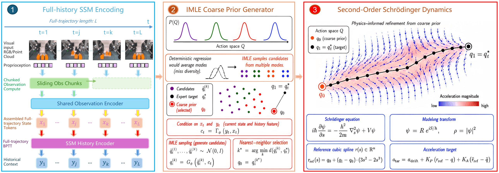

Chronos treats observation history as the latent state of robot policy dynamics and refines actions through acceleration-driven second-order dynamics.
Overview
Memory-dependent manipulation violates the Markovian shortcut: the same current observation can require different actions after different histories. Chronos addresses this problem by elevating observation history from auxiliary context to the latent state of the policy dynamics. At every physical control step, Chronos forms one state-representative token from observation and proprioception, propagates the full causal history with a selective state space model, generates a multimodal coarse action prior with IMLE, and refines the prior through a second-order Schrodinger-inspired acceleration bridge.
Chronos Framework
Full-History State Encoding
One token is formed at each physical control step. A selective state space model propagates the full causal history as the policy state.
IMLE Coarse Action Prior
A history-conditioned IMLE generator samples multimodal action chunks, preserving multiple plausible future behaviors.
Second-Order Action Bridge
A Schrodinger-inspired acceleration field refines the coarse action prior into smoother and more physically grounded robot motion.

Full-history state propagation, multimodal coarse action-prior generation, and acceleration-driven second-order refinement.
Key Results
Memory-Dependent Control
Chronos achieves 73.6% average success on RMBench, outperforming pi0.5 by +62.4 percentage points with 10× fewer parameters.
Compact Yet Strong
Chronos surpasses the memory VLA Mem-0 by 22.8 points while using over 30× fewer parameters.
Real-World Validation
In real-world dual-arm experiments with a single RGB camera, Chronos achieves 78% average success and 72% on memory-dependent tasks.
Simulation and Benchmark Gallery
Side-by-side videos compare Chronos against alternative action-generation designs or stronger baselines. For the ALOHA precision insertion experiment, we compare a diffusion action head with the full Chronos second-order action bridge.
ALOHA Precision Insertion
Real-World Deployment
Real-world experiments compare pi0.5 and Chronos side by side. Chronos preserves hidden task phase and history-dependent information, while pi0.5 often skips intermediate stages or prematurely executes the final action.
Task 1: Long-Horizon Sequence
Task 2: Visible Manipulation
Task 3: Memory-Dependent Extension
BibTeX
@article{zhou2026chronos,
title={Chronos: A Physics-Informed Full-History Framework for Non-Markovian Long-Horizon Manipulation},
author={Zhou, Yulin and Wang, Yimeng and Wang, Nengyu and Xing, Shaojia and Tu, Shiyun and Li, Xiang and Zhang, Jingkai and Jiang, Ningbo and Lin, Yuankai and Yang, Hua and Zeng, Xiangrui and Yin, Zhouping},
journal={arXiv preprint arXiv:2606.30318},
year={2026}
}